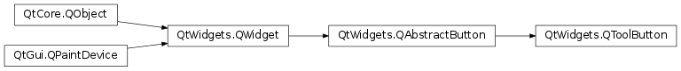

QToolButton¶
Synopsis¶
Functions¶
- def
arrowType() - def
autoRaise() - def
defaultAction() - def
initStyleOption(option) - def
menu() - def
popupMode() - def
setArrowType(type) - def
setAutoRaise(enable) - def
setMenu(menu) - def
setPopupMode(mode) - def
toolButtonStyle()
Slots¶
- def
setDefaultAction(arg__1) - def
setToolButtonStyle(style) - def
showMenu()
Detailed Description¶
The
PySide2.QtWidgets.QToolButtonclass provides a quick-access button to commands or options, usually used inside aPySide2.QtWidgets.QToolBar.A tool button is a special button that provides quick-access to specific commands or options. As opposed to a normal command button, a tool button usually doesn’t show a text label, but shows an icon instead.
Tool buttons are normally created when new
PySide2.QtWidgets.QActioninstances are created withQToolBar.addAction()or existing actions are added to a toolbar withQToolBar.addAction(). It is also possible to construct tool buttons in the same way as any other widget, and arrange them alongside other widgets in layouts.One classic use of a tool button is to select tools; for example, the “pen” tool in a drawing program. This would be implemented by using a
PySide2.QtWidgets.QToolButtonas a toggle button (seePySide2.QtWidgets.QAbstractButton.setCheckable()).
PySide2.QtWidgets.QToolButtonsupports auto-raising. In auto-raise mode, the button draws a 3D frame only when the mouse points at it. The feature is automatically turned on when a button is used inside aPySide2.QtWidgets.QToolBar. Change it withPySide2.QtWidgets.QToolButton.setAutoRaise().A tool button’s icon is set as
PySide2.QtGui.QIcon. This makes it possible to specify different pixmaps for the disabled and active state. The disabled pixmap is used when the button’s functionality is not available. The active pixmap is displayed when the button is auto-raised because the mouse pointer is hovering over it.The button’s look and dimension is adjustable with
PySide2.QtWidgets.QToolButton.setToolButtonStyle()andPySide2.QtWidgets.QAbstractButton.setIconSize(). When used inside aPySide2.QtWidgets.QToolBarin aPySide2.QtWidgets.QMainWindow, the button automatically adjusts toPySide2.QtWidgets.QMainWindow‘s settings (seeQMainWindow.setToolButtonStyle()andQMainWindow.setIconSize()). Instead of an icon, a tool button can also display an arrow symbol, specified withPySide2.QtWidgets.QToolButton.arrowType().A tool button can offer additional choices in a popup menu. The popup menu can be set using
PySide2.QtWidgets.QToolButton.setMenu(). UsePySide2.QtWidgets.QToolButton.setPopupMode()to configure the different modes available for tool buttons with a menu set. The default mode is DelayedPopupMode which is sometimes used with the “Back” button in a web browser. After pressing and holding the button down for a while, a menu pops up showing a list of possible pages to jump to. The timeout is style dependent, seeQStyle.SH_ToolButton_PopupDelay.
Qt Assistant’s toolbar contains tool buttons that are associated with actions used in other parts of the main window.

-
class
PySide2.QtWidgets.QToolButton([parent=nullptr])¶ Parameters: parent – PySide2.QtWidgets.QWidgetConstructs an empty tool button with parent
parent.
-
PySide2.QtWidgets.QToolButton.ToolButtonPopupMode¶ Describes how a menu should be popped up for tool buttons that has a menu set or contains a list of actions.
Constant Description QToolButton.DelayedPopup After pressing and holding the tool button down for a certain amount of time (the timeout is style dependent, see QStyle.SH_ToolButton_PopupDelay), the menu is displayed. A typical application example is the “back” button in some web browsers’s tool bars. If the user clicks it, the browser simply browses back to the previous page. If the user presses and holds the button down for a while, the tool button shows a menu containing the current history listQToolButton.MenuButtonPopup In this mode the tool button displays a special arrow to indicate that a menu is present. The menu is displayed when the arrow part of the button is pressed. QToolButton.InstantPopup The menu is displayed, without delay, when the tool button is pressed. In this mode, the button’s own action is not triggered.
-
PySide2.QtWidgets.QToolButton.arrowType()¶ Return type: PySide2.QtCore.Qt.ArrowType
-
PySide2.QtWidgets.QToolButton.autoRaise()¶ Return type: PySide2.QtCore.bool
-
PySide2.QtWidgets.QToolButton.defaultAction()¶ Return type: PySide2.QtWidgets.QActionReturns the default action.
-
PySide2.QtWidgets.QToolButton.initStyleOption(option)¶ Parameters: option – PySide2.QtWidgets.QStyleOptionToolButtonInitialize
optionwith the values from thisPySide2.QtWidgets.QToolButton. This method is useful for subclasses when they need aPySide2.QtWidgets.QStyleOptionToolButton, but don’t want to fill in all the information themselves.See also
Return type: PySide2.QtWidgets.QMenuReturns the associated menu, or 0 if no menu has been defined.
-
PySide2.QtWidgets.QToolButton.popupMode()¶ Return type: PySide2.QtWidgets.QToolButton.ToolButtonPopupMode
-
PySide2.QtWidgets.QToolButton.setArrowType(type)¶ Parameters: type – PySide2.QtCore.Qt.ArrowType
-
PySide2.QtWidgets.QToolButton.setAutoRaise(enable)¶ Parameters: enable – PySide2.QtCore.bool
-
PySide2.QtWidgets.QToolButton.setDefaultAction(arg__1)¶ Parameters: arg__1 – PySide2.QtWidgets.QActionSets the default action to
action.If a tool button has a default action, the action defines the button’s properties like text, icon, tool tip, etc.
-
PySide2.QtWidgets.QToolButton.setMenu(menu)¶ Parameters: menu – PySide2.QtWidgets.QMenuAssociates the given
menuwith this tool button.The menu will be shown according to the button’s
PySide2.QtWidgets.QToolButton.popupMode().Ownership of the menu is not transferred to the tool button.
See also
-
PySide2.QtWidgets.QToolButton.setPopupMode(mode)¶ Parameters: mode – PySide2.QtWidgets.QToolButton.ToolButtonPopupMode
-
PySide2.QtWidgets.QToolButton.setToolButtonStyle(style)¶ Parameters: style – PySide2.QtCore.Qt.ToolButtonStyle
-
PySide2.QtWidgets.QToolButton.showMenu()¶ Shows (pops up) the associated popup menu. If there is no such menu, this function does nothing. This function does not return until the popup menu has been closed by the user.
-
PySide2.QtWidgets.QToolButton.toolButtonStyle()¶ Return type: PySide2.QtCore.Qt.ToolButtonStyle
-
PySide2.QtWidgets.QToolButton.triggered(arg__1)¶ Parameters: arg__1 – PySide2.QtWidgets.QAction
© 2018 The Qt Company Ltd. Documentation contributions included herein are the copyrights of their respective owners. The documentation provided herein is licensed under the terms of the GNU Free Documentation License version 1.3 as published by the Free Software Foundation. Qt and respective logos are trademarks of The Qt Company Ltd. in Finland and/or other countries worldwide. All other trademarks are property of their respective owners.